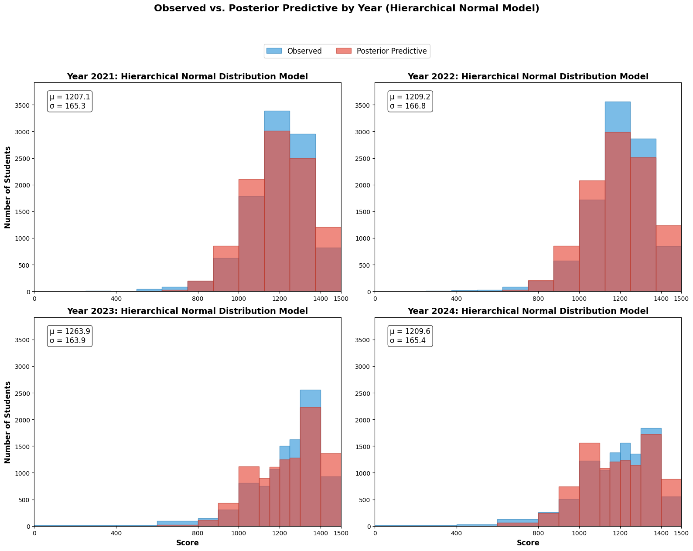

Abstract
This project reconstructs annual test-score distributions when only grouped histograms, with different bin boundaries, are available. I compared separate and hierarchical Bayesian models using bin probabilities rather than treating bin midpoints as individual scores. Pooling changed estimates relatively little; distributional assumptions mattered more to the predictive fit.
Keep the information the bins actually contain
Scores lie between zero and 1,500. For each year, the likelihood uses the probability that a score falls within each reported interval. Integrating the distribution over those boundaries lets years with different histograms enter a common model without inventing individual records.

Does partial pooling change the comparison?
Separate Normal models and a hierarchical Normal model produced similar estimates, with modest shrinkage for 2023. Large cohort counts leave less scope for pooling to alter the results. Similar estimates, however, do not establish that the Normal likelihood fits well.
Check shape as well as location
Predictive checks revealed discrepancies in the score bins. A hierarchical logit-normal model accommodates bounded, asymmetric distributions. Its transformed location, 1,500 × sigmoid(mu), is a median—not the arithmetic mean. The readable notebook flags the original labeling error explicitly.
Explore the work
The original materials retain the calculations, assumptions, and supporting discussion behind this overview.
The readable analysis preserves existing notebook content with code and long output collapsed. Models were not rerun for this presentation; interpretation notes appear at the top of each preview.